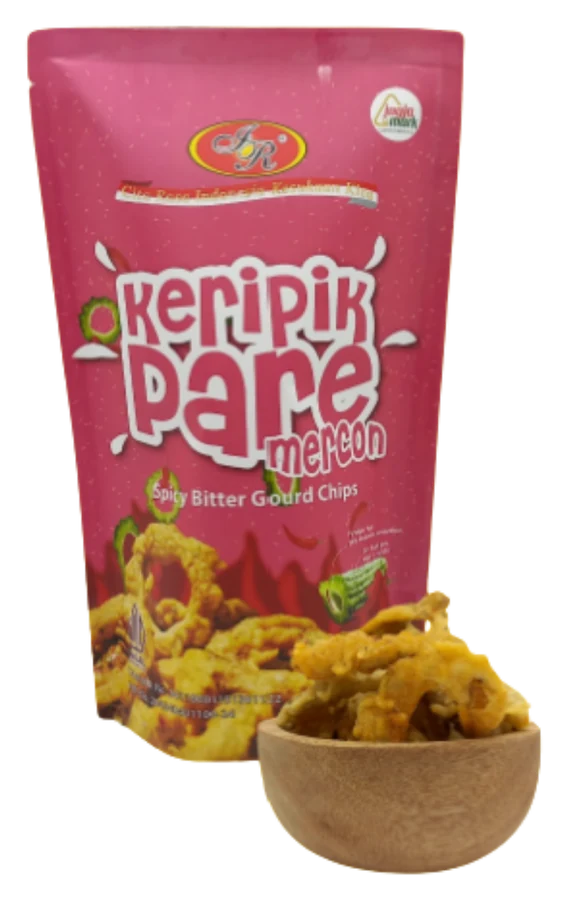

Perjalanan Karier
Langkah demi langkah IR Snack tumbuh dari usaha rumahan menjadi perusahaan berbadan hukum.
2000
Merintis Usaha & Pemberian Nama
Sleman, Yogyakarta- Mendapat pesanan kue kering dan emping jagung, lalu memasarkannya ke warung dan pasar tradisional.
- Usaha resmi diberi nama Intan Rahmadhani Snack dengan merek Rahmadhani dan logo IR.
2003
Legalitas Usaha & Masuk Pasar Modern
Sleman, Yogyakarta- Melengkapi legalitas usaha: SP-PIRT, SIUP, TDI, TDP, dan HO.
- Lolos seleksi produk dan resmi bermitra dengan 7 supermarket.
2007
Narasumber & Perluasan Pasar
Sleman, Yogyakarta- Pertama kali ditunjuk Disperindag Kab. Sleman menjadi narasumber pelatihan.
- Menambah varian produk menjadi 12 varian dan memperluas kemitraan ke 15 supermarket.
2010
Sertifikasi Halal & Merek HKI
Sleman, Yogyakarta- Lolos sertifikasi halal dan memperoleh sertifikat halal.
- Merek lolos pendaftaran HKI dan memperoleh nomor registrasi.
2023
Badan Usaha PT & Pasar Ekspor
Sleman, Yogyakarta- Mendirikan badan usaha PT Perorangan: PT Intan Rahmadhani Santosa, merek IR Snack, logo IR.
- Menembus pasar ekspor melalui Halal Valet, Angsana Mall, Johor Baru, Malaysia.
Mau jadi bagian dari perjalanan kami?
Hubungi kami untuk kemitraan, reseller, atau sekadar menyapa.

